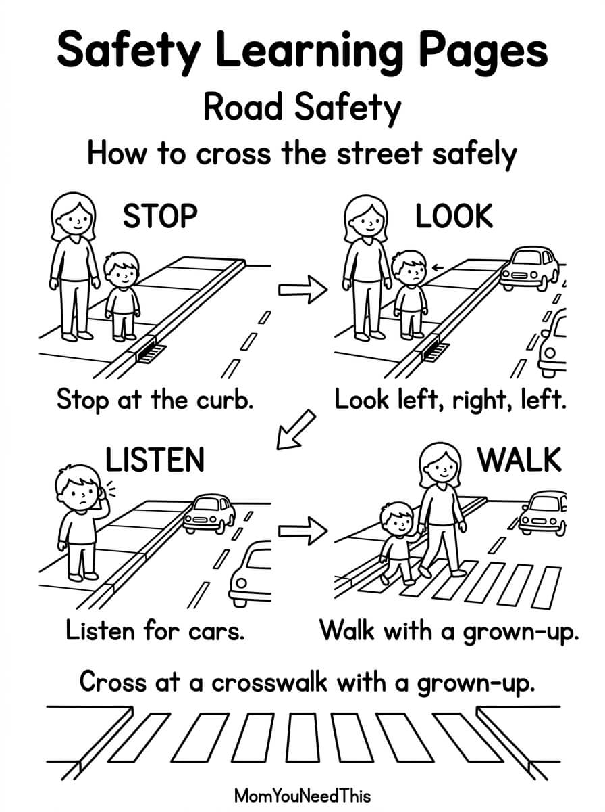

Road Safety Free Printable Road Safety Pages For Kids
Help toddlers and preschoolers learn important road safety rules with these fun, kid-friendly printable pages. Practice recognizing traffic lights, crossing streets safely, and learning simple ways to stay safe around roads and cars.
🚦 Learn Important Road Safety Rules
Use the printable to help your child learn basic road safety skills and start conversations about staying safe when walking, crossing streets, and being around vehicles.
Free Road Safety Printable


How To Use This Printable
Look at each picture with your child and talk about what is happening. Practice simple safety rules such as stopping before crossing, looking both ways, using a crosswalk, and paying attention to traffic lights. You can also use the pages for preschool lessons, coloring activities, or quiet learning time.
Why Learn About Road Safety?
Learning basic road safety concepts helps young children become familiar with important safety habits before they begin navigating roads and crossings more independently. Talking about these ideas together can make everyday walks and outings learning opportunities.
🎁 Keep Exploring Free Learning Activities
Discover more printable activities, toddler resources, and learning ideas created for busy parents.
🎁 View All Free Resources